Unit 3 Spatial Interpolation
Overview
The overarching theme of this practical is Spatial Interpolation. As described in this week’s lecture spatial interpolation is the process of transforming spatial data from one geographical framework to another. This is not the same as re-projection (for example from an OSGB projection in metres to a WGS84 projection in degrees), rather is the reallocation of data to different spatial units.
This session covers 2 distinct types of interpolation:
- Point interpolation to generate continuous surfaces of some point observation
- Area interpolation to transform between different area structures
The point interpolation is based on Chapter 6 in Brunsdon and Comber (2025) and the areal interpolation is based on the worked examples provided in Comber and Zeng (2019). The practical covers these this in 4 sections below:
- Kernel Density Estimation (point observations to surfaces - heat maps!)
- Inverse Distance Weighting (point values to surfaces)
- Area Weighted interpolation (area to area)
- Dasymetric interpolation (area to area)
As ever an R script with all the code for this practical is provided.
You will to load need the following packages:
3.1 Kernel Density Estimation (point observations)
You will need to load some data into your R/Rstudio session after downloading from the VLE and saving to your working directory. The .RData files loads 2 sf (spatial) objects:
The hp layer is a point layer of 2021 house sales in Leeds and wards is an areal data of the 33 wards in the Leeds metropolitan area. These have been created by linking data on house prices the ONS contain the address and postcode of each sale as well as the price and a postcode look up table again available via ONS, that lists each UK postcode with a number of descriptive attributes for each postcode. These are large datasets. The code in Appendix A shows how these were generated, if you are interested.
Kernel Density Estimation (KDE) is a technique that creates a continuous representation of the distribution of a given variable.
Now, you have used this approach when you have created density histograms of a single variable (1-Dimensional, 1D) in a dataset. A histogram allocates values to a column range in the histogram (the bins) and rescales the y-axis to show probabilities rather than counts. Note the log of prices taken here to transform the data to a normal distribution:
# using ggplot approaches
ggplot(data = hp, mapping = aes(x = log(price))) +
geom_histogram(aes(y=after_stat(density)), bins = 35, fill="red4", col="white") +
geom_density(alpha=.5, fill="#FF6666") +
scale_x_continuous(breaks = 6:18)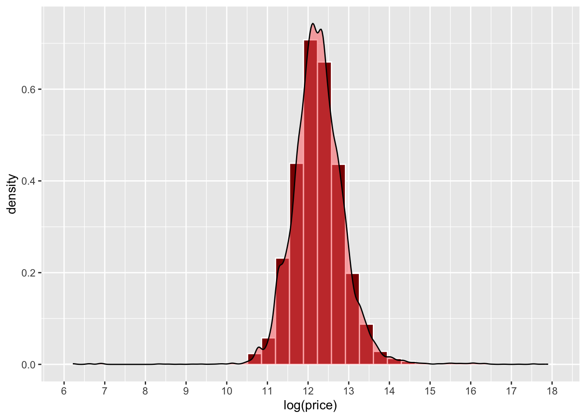
Figure 3.1: An example of a density histogram.
What a density histogram shows is the probability of finding a value in the data. So for example the probability of finding a value of 12 in logged house price in the dataset, in this case is about 0.75 (75%) and the probability of finding a logged price value of 13 is about 0.2 (20%).
Now this 1D approach with house price, can be extended to a 2D, using the locations (Easting and Northing) of the hp data locations (note not the price: that is later!). This generates a smooth representation of the probability of observation locations through a 2D surface.
In both cases, the density functions smooth out the binning, with this being for a value range in a histogram and 2D locations in a KDE heat map. The histogram returns the probability of finding an observation within a value range, and the KDE shows the probability of finding at an observation at a 2D locations, with bins composed of pixels in the study area.
Here the probability is indicated by a colour rather than the position on the y-axis as in the histogram above.The simplest way to think about this is each (observed) point location \(\mathbf{x}_i\) is random and drawn independently from an unknown distribution with probability density function \(f(\mathbf{x}_i)\). Note If we think of locations in space as a very fine pixel grid, and assume a probability density value is assigned to each pixel, then summing the pixels making up an arbitrary region on the map gives the probability that an event occurs in that area. It is generally more practical to assume an unknown distribution rather than for example a Gaussian distribution, since geographical patterns often take on fairly arbitrary shapes areas of raised risk will occur in a number of locations around a city, rather than a simplistic radial bell curve centred on the city’s mid-point. A common technique used to estimate \(f(\mathbf{x}_i)\) is the KDE , which averages a series of small bumps (probability distributions in 2D, in fact) centred on each observed point.
The code below uses the geom_density_2d and geom_density_2d_filled functions in ggplot2 to generate a KDE of house transactions. You should note that this has nothing to do with price, it simply shows a probability of a house transaction being found in different parts of the city based on this data.
# extract the coordinates
coords = data.frame(st_coordinates(hp))
ggplot(data=coords, aes(x=X, y=Y)) +
geom_point()+
coord_sf() +
geom_density_2d_filled(alpha = 0.5) +
geom_density_2d(linewidth = 0.25, colour = "black") +
labs(fill="Probability")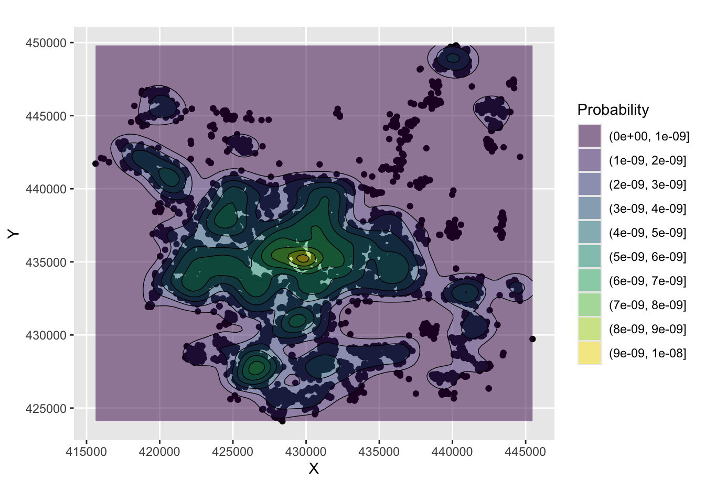
Figure 3.2: An example of a density surface.
And a basemap can be included to add spatial context but note the need to specify the spatial layer (hp), the associated geom_sf mapping function and the to pass the coords object and associated aesthetics to do this.
ggplot(data = hp) +
annotation_map_tile(zoomin=0, type='osm') +
geom_sf() + coord_sf() +
geom_density_2d_filled(data=coords, aes(x=X, y=Y), alpha = 0.5) +
geom_density_2d(data=coords, aes(x=X, y=Y), linewidth = 0.25, colour = "black") +
xlab("")+ ylab("") + labs(fill="Probability")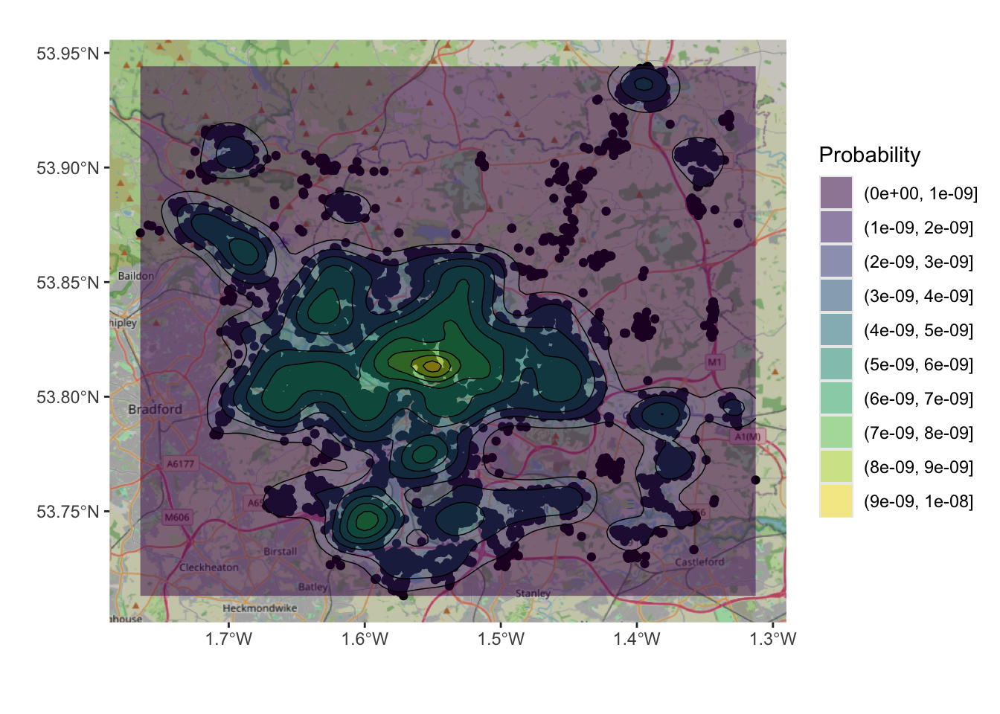
Figure 3.3: An example of a density surface, with a transparency term and an OSM backdrop.
However, this only plots the data. The code below defines a function to generate a KDE spatial point layer.
kde_sf = function (pts, h, n = 100, lims = NULL)
{
xy = st_coordinates(pts)
crs_val = st_crs(pts)
if (missing(h))
h = c(bandwidth.nrd(xy[, 1]), bandwidth.nrd(xy[, 2]))
if (is.null(lims)) {
lims = c(range(xy[, 1]), range(xy[, 2]))
} else {
lims = st_bbox(lims)[c(1, 3, 2, 4)]
}
kd = kde2d(xy[, 1], xy[, 2], h, n, lims)
kd_df = data.frame(expand.grid(kd$x, kd$y), kde = array(kd$z, length(kd$z)))
kd_sf <- st_as_sf(kd_df, coords = c("Var1", "Var2"), crs = crs_val)
return(kd_sf)
}This can be used to create an sf object of the KDE and mapped:
# create kde
kde_hp = kde_sf(hp, lims = wards)
# map the result
ggplot(data = wards) + geom_sf() +
geom_sf(data = kde_hp, aes(col = kde)) +
scale_colour_viridis_c(name = "") 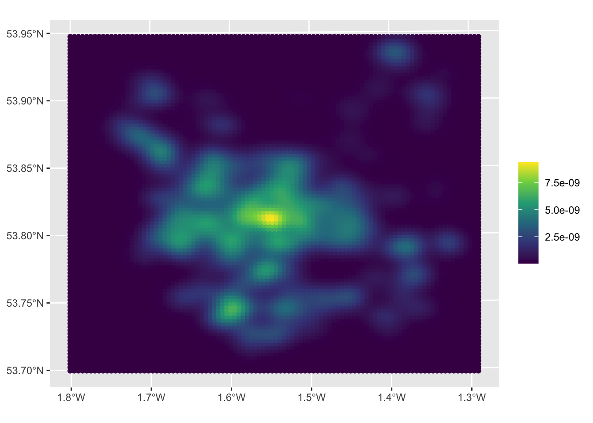
Figure 3.4: A KDE of 2021 house sales in the Leeds area.
The maps allow us to see the distribution of house sale transactions but also to relate these to local context. In this case the location with a highest volume of house transactions are around the city centre - the area with the most houses! - with a doughnut around it indicating fewer transactions and several pockets in other smaller centres of population.
So what this shows is the probability of of observing a house that has been sold at each location. So really this heat map shows where things have been observed, but converted to probabilities over space. The data really are showing urban areas in this case!
We could examine this in detail using ggplot and filtering for probabilities greater than \(10^{-9}\):
kde_hp %>% filter(kde > 10^(-9)) %>%
ggplot(aes(col = kde)) +
annotation_map_tile(zoomin=0, type='osm') +
geom_sf(alpha = 0.5) +
scale_colour_viridis_c(name = "") +
theme(legend.position="none")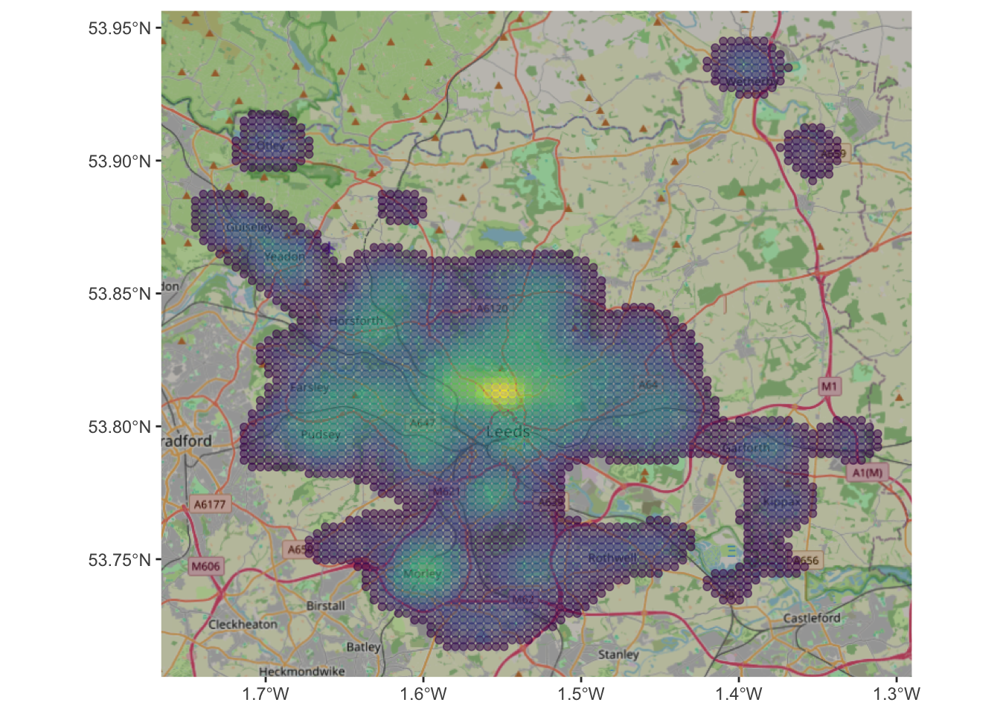
Figure 3.5: A filtered KDE of 2021 house sales in the Leeds area with an OSM backdrop.
Task 1
Your task is to explore the effect of changing the input parameters to the function for creating KDEs. What happens if you change n and h? Can you work out what they are? The help for kde2d function at the heart of the function above might help you as well!
3.2 Inverse Distance Weighting (point values)
The previous section showed how to visualize the distribution of a set of spatial objects represented as points, providing the probability of an occurrence. Often we are interested in understanding the distribution of a given value attached to each location. This is very commonly done with for example weather data collected at weather stations (points) that are used to say something about the weather in unsampled locations between those points.
In these cases spatial interpolation can be used to create continuous surfaces for a particular phenomenon (e.g. temperature, house prices) given only a finite sample of observations. This can be done using Inverse Distance Weighting (IDW) for convenience. Brunsdon and Comber (2025) provide offer a useful description (p. 227):
In the inverse distance weighting (IDW) approach to interpolation, to estimate the value of \(z\) at location \(x\) a weighted mean of nearby observations is taken […]. To accommodate the idea that observations of \(z\) at points closer to \(x\) should be given more importance in the interpolation, greater weight is given to these points
So this is a another moving window or kernel based approach, that computes a value for each location in the study area based on the data under the kernel, with values from observations nearer to the kernel centre contributing more to the IDW value at that location.
IDW can be done using the idw function in the gstat package.
First, you will need a set of sample points at which the IDW estimates are computed. The st_sample function in the sf packages creates a sample grid.
s.grid = st_sample(wards, 1500, type = "regular")
# you could examine this by un-commenting the line below
# plot(s.grid, pch = 4)The type='regular' argument generate a regular grid of points covering the LSOA areas, with approximately 1500 points
Next, the IDW estimate is created from the hp data using the idw function. This requires the model to be specified (here the formula is price ~ 1). The parameter idp (interpolation distance parameter) here is set to 1.
## [inverse distance weighted interpolation]The object idw.est is an sf points data layer containing the IDW estimates at each of the sample points (actually a rectangular grid) in a variable called var1.pred. It is possible to view this directly by choosing point colour to represent the values of var1.pred.
ggplot() +
annotation_map_tile(zoom = 12) +
geom_sf(data = idw.est, aes(col = var1.pred)) +
scale_colour_distiller(palette = "YlOrRd", name = "Price") +
theme_linedraw()The mapped results show the areas of higher house prices in the city centre and towards the River Wharfe in the north of the region.
Note that the formula we are using to model house prices (price~1), has the name of the variable we are interested in on the left of ~ , and everything to its right are the explanatory variables. As this is the simplest possible case and do not have further variables to add, so we simply write 1. By default, idw uses all the available observations, weighted by distance, to provide an estimate for a given point.
Task 2
Modify the call to idw above so that it restricts the maximum number of neighbours that are considered to 100. You will need to add argument nmax = 100 and plot the results again. What is the effect and why do you think that is happening?
NB You may want to attempt this task after the timetabled practical session. Worked answers are provided in the last section of the worksheet.
3.3 Area Weighted interpolation (area to area)
The aim in this part of the practical is to transform data from one areal unit (source zones) to another (target zones). There are many approaches areal interpolation (as described in (Comber and Zeng 2019)). These are used to generate estimates of values for different areas to the original data. This is useful when fine scale data are unavailable or restricted to confidentiality or political reasons.
The data from Comber and Zeng (2019) over census areas in New Haven, Connecticut, USA are used in the areal interpolation exercises, The code used to generate the results in the paper are available from Lex Comber’s GitHub site (https://github.com/lexcomber/SpatInt/). The code snippet below loads 2 .RData files with 3 sf objects:
# load some area data from Lex's GitHub site
download.file("https://github.com/lexcomber/SpatInt/blob/master/DataIn.RData?raw=True",
"./zones.RData", mode = "wb")
load("zones.RData")
# a mask of non-residential land use
download.file("https://github.com/lexcomber/SpatInt/blob/master/mask.RData?raw=True",
"./mask.RData", mode = "wb")
load("mask.RData")The projections and geometry of the sf layers needs to be tidied and then the data can be examined (ignore the warnings - this is why they are being tidied!):
# tidy the geometry
sz_sf = st_make_valid(sz_sf)
# tidy the projections
st_crs(sz_sf) = st_crs(sz_sf)
st_crs(tz_sf) = st_crs(tz_sf)
st_crs(mask_sf) = st_crs(mask_sf)Now the aim in the Areal Interpolation is to transform House counts over Source Zones (sz_sf) to House counts over Target Zones (tz_sf). The data are mapped below using the HSE_UNITS (number of housing units - residential properties) in the source zone object (sz_sf) over census tracts in New Haven, Connecticut, USA. The aim is to generate estimates over a 500m grid. The map below shows Target and Source Zones using the plot_grid from the cowplot package to combined them:
p1 =
ggplot(sz_sf) +
geom_sf(aes(fill = HSE_UNITS)) +
scale_fill_distiller(palette = "YlGnBu", name = "House\nCount") +
theme(axis.text=element_blank(), axis.ticks=element_blank(),
legend.position = c(0.2, 0.3))
p2 =
ggplot(tz_sf) +
geom_sf(fill = NA, col = "black", lwd = 0.4) +
theme(axis.text=element_blank(), axis.ticks=element_blank())
plot_grid(p1,p2)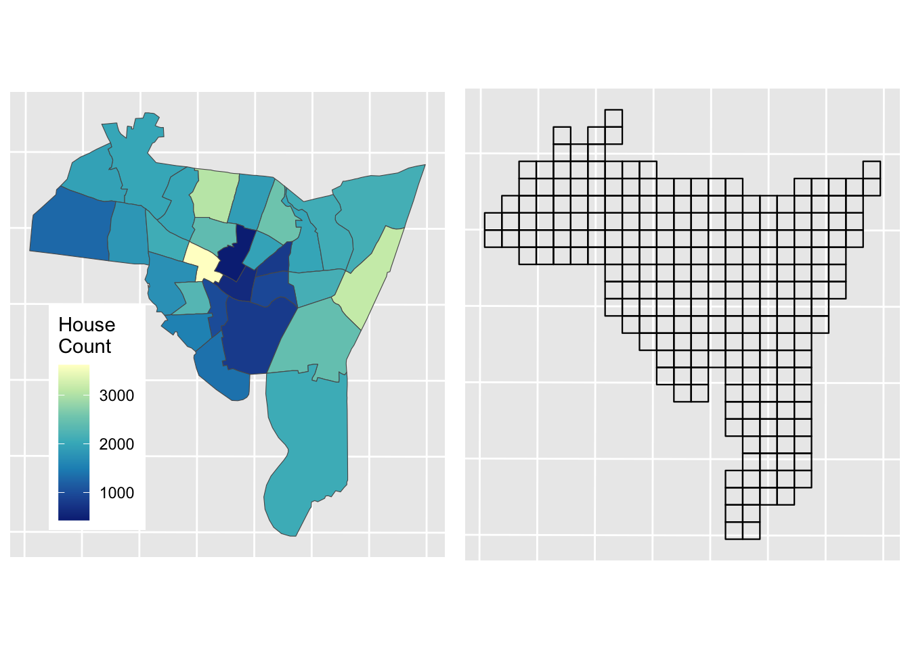
Figure 3.6: Source zones (left) and Target zones (right).
The best known and most widely used areal interpolation approach is areal weighting (Goodchild and Lam 1980). This allocates the source zone attributes proportionately to the target zones based on the proportions of their intersecting areas. Area weighting is inherently volume preserving – that is the source zone values are maintained if the target zone values within the source zone are summed – and is easily implemented using polygon overlay operations.
In R it can be implemented using the st_interpolate_aw function in the sf package:
You should inspect the results:
Now it is important to check that the interpolation has resulted in the correct number of houses being estimated in the target zones:
## [1] 52484.8## [1] 54101Here we can see that there is some distortion (3%) that needs to be corrected
# determine the correction factor
fac <- sum(sz_sf$HSE_UNITS)/sum(aw_res$HSE_UNITS)
# and apply
aw_res$HSE_UNITS = aw_res$HSE_UNITS*facThe results of Areal Weighting Interpolation can be mapped. How do you think this compares with the original figure?
# plot the interpolated data
aw_fig =
ggplot(data = aw_res) + geom_sf(aes(fill = HSE_UNITS)) +
scale_fill_distiller(palette = "YlGnBu", name = "House\nCount") +
theme(axis.text=element_blank(), axis.ticks=element_blank(),
legend.position = c(0.2, 0.3))
plot_grid(p1, aw_fig)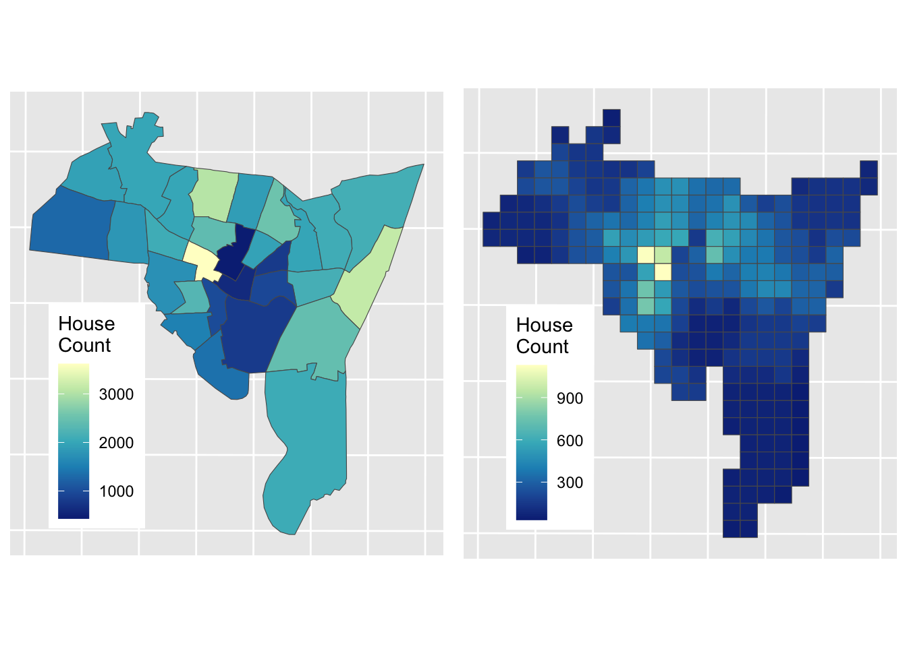
Figure 3.7: House counts interpolated from source zones to target zones.
The advantages of the Area Weighted approach are that it is quick, it makes few assumptions (perhaps too few! - see disadvantages) and it is easy to see how the interpolated values are generated: they are proportionate to the areas of intersection between the source and target zones.
The disadvantages of this method are also obvious (and related): it assumes the relationship between the source zone attribute being interpolated and the target zone areas to be spatially homogeneous. That is, it assumes that all of each target zone area contain houses, an assumption that is rarely true in the real world (due to roads, parks, factors, shops etc). However, in the absence of information about these features, it remains a reasonable solution.
3.4 Dasymetric Interpolation
So the main disadvantage of standard area weighted interpolation is that it assumes that the relationship between the source zone attribute being interpolated and the target zone areas is spatially homogeneous: that the phenomenon (data / variable) being interpolated (e.g. population, houses, etc) is just as likely to be found in each part of each of the target zones. In reality this is rarely true, and can be at least partially addressed by the use of some additional or ancillary data that pertains to the variable of interest, to constrain the interpolation. For example, if interpolating house counts or population, then it would sensible to exclude areas in the target zones from the interpolation that have no houses or are not residential (e.g. parks, industrial areas, fields etc). This is Dasymetric Interpolation approach.
Dasymetric mapping was pioneered by the Leicester group in the early 1990s. They linked remote sensing analyses to identify urban areas and urban density to help inform or constrain the interpolation of populations etc (see for example (Langford and Unwin 1994; Fisher and Langford 1996)). However there are now many new forms of data that can act as proxies for population and other activities and thus can be used to inform / constrain interpolation approaches - Point of Interest (PoI) check-ins, website listings, social media etc. These are reviewed and some are applied in Zeng and Comber (2020).
The dasymetric interpolation approach is the most cited of the methods that use ancillary information (see (Langford 2013) for a summary). Ancillary data includes areal features and linear or point features with buffers. It was first proposed as a cartographic technique to address some of the issues associated with choropleth mapping. The simplest dasymetric approach is to create a binary masks of areas that are included or excluded from the interpolation process. We will demonstrate this approach here
Data of non-residential land use areas was downloaded and stored in mask_sf, as described in Comber and Zeng (2019). In this practical you will again interpolate source zone house counts but you will use the will use the non-residential data layer to mask out parts of the target zones to be excluded from the interpolation: i.e. you will constrain the interpolation to areas likely to contain houses.
Recall the data you loaded from GitHub site, after a bit of manipulation, you can examine these by mapping them with an OSM backdrop. You may want to zoom in and out and check what has been omitted from the 500m grid cells. Note that you can turn layers on and off in the plot to inspect the context.
# transform the mask layer projection to match the others
mask_sf <- st_transform(mask_sf, st_crs(tz_sf))
# and create the target zone mask
tz_m <- st_difference(tz_sf, mask_sf)## Warning: attribute variables are assumed to be spatially constant throughout all geometries# plot
ggplot(data = tz_m) +
annotation_map_tile(zoom = 12) +
geom_sf(fill = "red") +
# now add the source zones
geom_sf(data = sz_sf, fill = NA, lwd = 1, col = "black") +
theme(axis.text=element_blank(), axis.ticks=element_blank()) ## Zoom: 12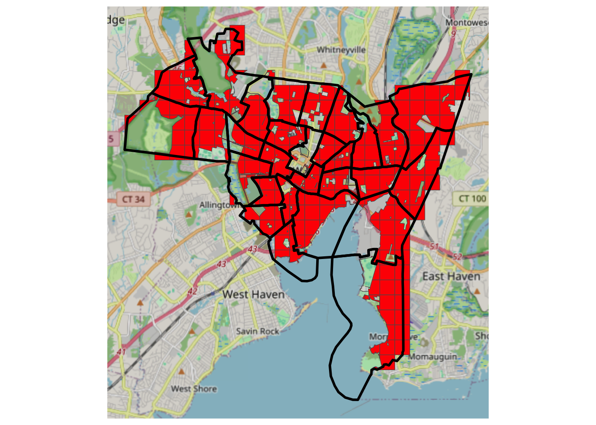
Figure 3.8: A mask of residential areas, with source zone outlines and an OSM backdrop.
The masked data can be passed to the areal weighting algorithm, with the results weighted as before:
## Warning in st_interpolate_aw.sf(sz_sf, tz_m, extensive = T): st_interpolate_aw assumes
## attributes are constant or uniform over areas of x# rescale by ratio of loss of the total housing units
# determine the correction factor
fac <- sum(sz_sf$HSE_UNITS)/sum(dasy_res$HSE_UNITS)
# and apply
dasy_res$HSE_UNITS = dasy_res$HSE_UNITS*facNext, the result can be linked back to the original unmasked target zones:
# create a target zone ID
dasy_res$TID <- tz_m$TID
# get an index of Dasy result to original 500m grid
index <- match(dasy_res$TID, tz_sf$TID)
# define a TZ output
dasy <- tz_sf
# allocate all areas 0
dasy$HSE_UNITS <- 0
# then allocate the matched results
dasy$HSE_UNITS[index] <- dasy_res$HSE_UNITSThe map below shows the result of Dasymetric interpolation.
dasy_fig =
ggplot(data = dasy) + geom_sf(aes(fill = HSE_UNITS)) +
scale_fill_distiller(palette = "YlGnBu", name = "House\nCount") +
theme(axis.text=element_blank(), axis.ticks=element_blank(),
legend.position = c(0.2, 0.3))
dasy_fig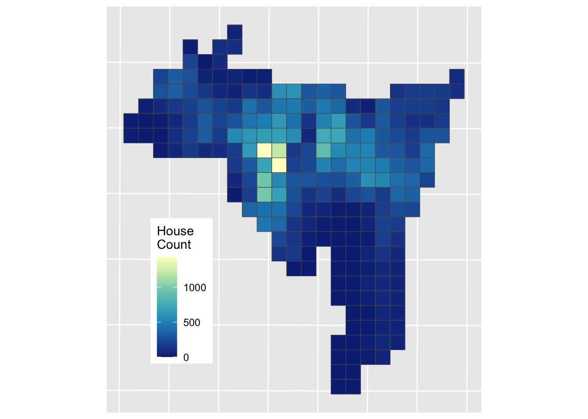
Figure 3.9: The result of a Dasymetric interpolation of house counts.
And this can be compared to the Area Weighted interpolation result
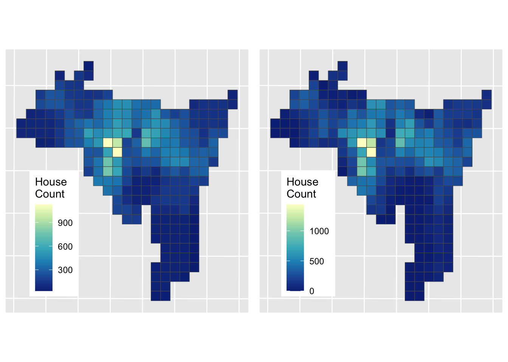
Figure 3.10: The results of Area weighted interpolation (left) and Dasymetric interpolation (right).
The Dasymetric approach has a different set of assumptions: namely that population is evenly distributed in “residential” areas, which of course it is not but it perhaps provides a more informed estimation of house counts in these target zone areas. Comber and Zeng (2019) summarise and compare a number of areal interpolation techniques, with coded examples.
Answers to Tasks
Task 1
Your task is to explore the effect of changing the input parameters to the function for creating KDEs. What happens if you change n and h? Can you work out what they are? The help for kde2 function at the heart of the function above might help you as well!
The n parameter determines the resolution of the output - the number of points in the grid that is returned. Higher values generate denser grids. To show this try running
# Task 1
kde_hp = kde_sf(hp, n = 10, lims = wards)
# map the result
ggplot(data = wards) + geom_sf() +
geom_sf(data = kde_hp, aes(col = kde), shape = 15, size = 4) +
scale_colour_viridis_c(name = "") The h parameter determines the bandwidth. This is the search space or distance around each observation over which the density estimation is made. If you think about this as smoothing parameter it determines the degree of smoothing. To show this try running the code with h = 20000 and h = 100
kde_hp = kde_sf(hp, h = 100, lims = wards)
# insepct the result
dim(kde_hp)
# map the result
ggplot(data = wards) + geom_sf() +
geom_sf(data = kde_hp, aes(col = kde), size = 0.01) +
scale_colour_viridis_c(name = "") Task 2
Modify the call to idw above so that it restricts the maximum number of neighbours that are considered to 100. You will need to add argument nmax = 100 and plot the results again. What is the effect and why do you think that is happening?
The effect is to generate predictions that have greater variation spatially. This is because the estimation at each point in the grid uses a smaller number of more local prices to generate the estimated process. Thus the window, from which data are drawn to makes the estimation is smaller and the results are smoothed less.
Optional: Fine tuning IDW
In the main practical you undertook of point interpolation of house price observations using Inverse Distance Weighting (IDW) to generate a surface. The IDW model was specified with the default parameters for the distance weighting and the number of observations to include in the estimation of house price. In Task 2 you were encouraged to adjust and explore the nmax parameter to the IDW function.
In this part of the self-directed practical you will try to optimise the selection of input parameters to make the best predictive model.
Recall that the IDW estimations were created using the code below:
# make the grid of locations
s.grid = st_sample(wards, 1500, type = "regular")
# estimate price over those locations
idw.est <- idw(formula = price~1, locations = hp,
newdata = s.grid, idp = 1.0)## [inverse distance weighted interpolation]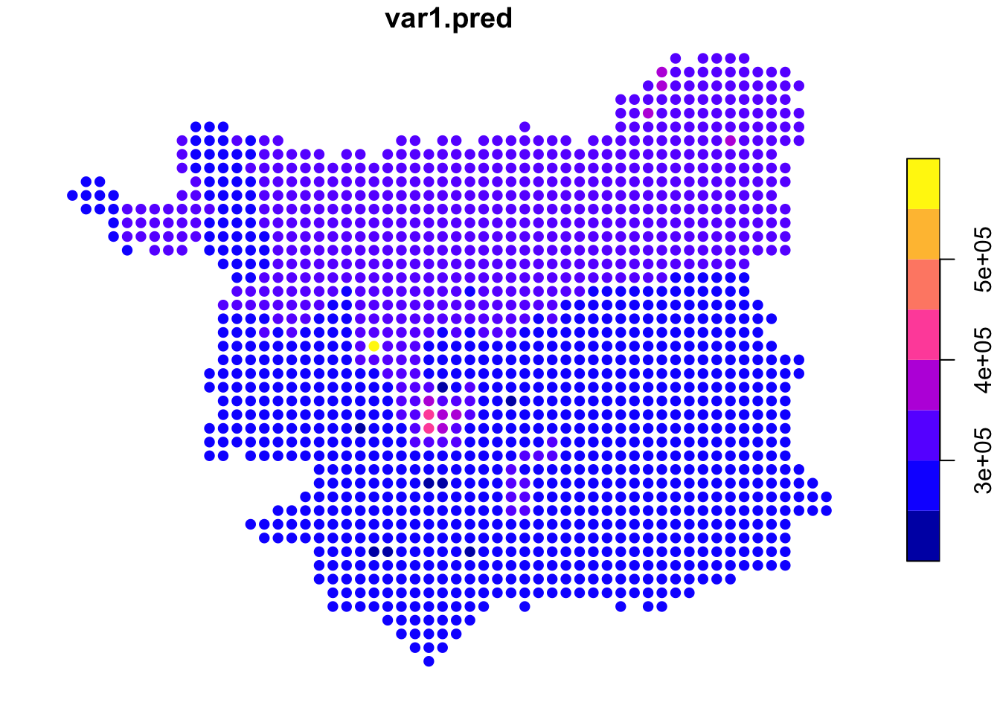
Figure 3.11: An example IDW surface.
To estimate the house price at each sample location in the grid, the idw function uses data from nearby observations.
Task 2 asked you to explore the impact of changing (reducing) the number of observation points (nmax) used to estimate house price at each grid cell location, setting this value to 100 as below, which changed the degree of smoothing in the estimated surface:
## [inverse distance weighted interpolation]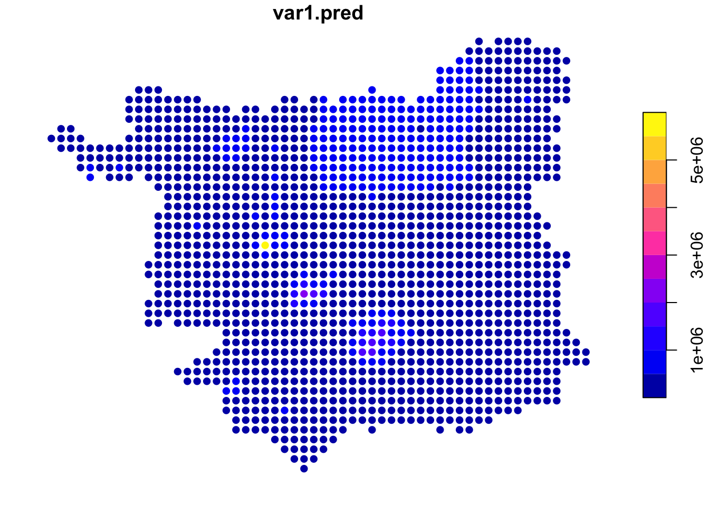
Figure 3.12: IDW estimations of price using a smaller number of observations.
Here, the same distance weighting parameter was used but only the nearest 100 observations were used to estimate the house price at each grid location (compared to the main practical, in which all other data points were used), weighted them according to their distance to the location.
This begs the questions 1) what is the right number of data points? and 2) what is the right distance weighting function? This are difficult to answer just by using different input parameters and mapping the results.
The rest of this practical tries to answer these questions.
The idw function used above and in the main practical returns a spatial object: idw.est is an sf format spatial object. What we need to do is to create a model, then use the model to make some predictions and then apply some objective measure to evaluate the predicted (or modelled) house price results, before applying this model repeatedly with different input parameters.
Create a Model
To illustrate the prices, first, note that IDW can be used to create a model and the model can be used to predict the house prices over the hp locations (i.e. the observed house sales locations:
# create a model
mod.idw <- gstat(formula = price~1, locations = hp, nmax = 100, set=list(idp = 1))
# apply to the data
hp$pred.idw <- predict(mod.idw, newdata=hp, debug.level=0)$var1.predThis can be examined in the usual way:
Define an error measure We need to evaluate how good the IDW estimates are. To do this an error measure can be used to compare modelled and known values. One such measure is called Root Mean Square Error (RMSE). This is calculated by squaring the errors, or residual differences between observed Price, \(y\), and the predicted price \(\hat{y}\), for all \(n\) observations in the validation subset, finding their mean and taking square root of the resulting mean:
\[\begin{equation} \text{RMSE} = \sqrt{ \sum{ \frac{ (y - \hat{y})^2}{n} }} \label{eq:hrmse} \end{equation}\]
We can define this in R as follows:
RMSE <- function(observed, predicted) {
res = sqrt(mean((predicted - observed)^2, na.rm=TRUE))
return(res)
}NB You have just written a function, that takes 2 inputs, does something with them and then returns something else.. Functions generally do something and return a result of some kind.
And the results can be evaluated using the RMSE function defined above:
Define training and validation subsets
We also need to separate model development and evaluation: models trained on one dataset will predict that data very well (as with the mod.idw model used to create hp$pred.idw above). However, we want to know how well they will perform on new data. One way is to hold back some known data points and to see how well the y are predicted with different input parameters to idw. This is done by splitting the input data into training and validation subsets. The idea is that different models are built using the training subset, for example with different values of nmax and idp, the models are used to predict the house price values of the known validation subset and then the predictions are evaluated by comparison with the known value.
An 80:20 split into training and validation subsets can be defined as follows :
set.seed(20200912) # for reproducibility
index <- sample(nrow(hp), 0.2 * nrow(hp))
# create subsets
trn <- hp[-index,] # training (80%)
tst <- hp[index,] # validation (20%)Define a tuning grid of model parameters
We can optimize the idw input parameters for the distance decay model (defined by idp) and number of neighbours used in the to estimation (defined by nmax) by finding the combination of these that minimises the RMSE value. To do this we need to think about creating a tuning grid of input parameters combinations and creating the training and validation data subsets. The code below defines a tuning grid containing ranges of the idp and nmax parameters:
params <- expand.grid(nmax_vals = seq(50, 1700, by = 50),
idp_vals = seq(0.5, 5, by = 0.5))
# define a result attribute in params
params$RMSE <- 0
dim(params)## [1] 340 3## nmax_vals idp_vals RMSE
## 1 50 0.5 0
## 2 100 0.5 0
## 3 150 0.5 0
## 4 200 0.5 0
## 5 250 0.5 0
## 6 300 0.5 0This contains 340 combinations of values to evaluate in an IDW and a variable called RMSE to take the evaluation result.
Evaluate different parameter combinations
The parameters in the tuning grid can be passed into the IDW using a for loop. This is the first time you have seen one of these. What a for loop does is do the same thing a set number of times, with the number defined with the call to for. What the code for(i in 1:340) says is, for each element i in the sequence 1 to 340 do the following …, and then the stuff inside the curly brackets {...} defines what is done. In the first iteration, i is 1 and in the next iteration it changes value to the next value ion the sequence, in this case 2, then 3 etc until i is the value in the sequence, in this case 340. What this allows us to do is to pass the i-th element of the parameter grid into the model using params$nmax_vals[i] and params$idp_vals[i]. The result of each iteration is written to the \(i^{th}\) element params$RMSE.
The code below will take a some minutes to run (4 minutes on my computer but 30 minutes on one of the demonstrator’s computer!) but using for loops like this means that we do not have create 340 separate models one by one!
for(i in 1:340) {
# make a model
model.i = gstat(formula = price~1,
locations = trn,
nmax = params$nmax_vals[i],
set=list(idp = params$idp_vals[i]))
# apply to the data
predicted.i = predict(model.i, newdata = tst, debug.level=0)$var1.pred
# calculate RMSE and write to the tune grid
params$RMSE[i] = RMSE(tst$price, predicted.i)
# include a counter... so you know something is happening!
if(i%%10 == 0) cat(i, "\t")
} For Loops
You might want to have a look at some explanations of For loops:
- 11 minute video: https://www.youtube.com/watch?v=h987LWDvqlQ
- An RBloggers post: https://www.r-bloggers.com/2015/12/how-to-write-the-first-for-loop-in-r/
- Hadley Wickam’s data science book - see only up to the end of Section 21.2 - https://r4ds.had.co.nz/iteration.html
Find the best parameters
We can use the which.min function to find out the combination of idp and nmax has the lowest predictive error:
## nmax_vals idp_vals RMSE
## 64 1500 1 0# assign the values
nmax = params[which.min(params$RMSE),"nmax_vals"]
idp = params[which.min(params$RMSE),"idp_vals"]This suggests that number of neighbours should be 1500 and that distance decay function should be specified with a value somewhere around a 1th order decay (actually declining with \(d^{1}\)).
Final model We can use these now to run the full model with our data:
idw.est <- idw(formula = price~1,locations = hp,
newdata = s.grid, idp = idp, nmax = nmax)
ggplot(data = idw.est) +
geom_sf(aes(col = var1.pred)) +
scale_colour_viridis_c(name = "") Additional Task
What are the potential limitations of this approach? To help you answer this - and there is no right answer just a series of things to think about - think about the different steps, and how these could be improved.
Answer to Additional Task
Additional Task
What are the potential limitations of this approach? To help you answer this - and there is no right answer just a series of things to think about - think about the different steps, and how these could be improved.
I think the main things here are:
- The training and validation split - it could be that sample in the 20% is not representative of the 80%. You could test this by examining their distributions and properties.
So we might want to get a training and validation split that minimise the differences between the distributions in these
- The scaling of the parameter tuning grid the divisions using steps of 50 for the
nmaxparameter and 0.5 for theidpparameter. Might smaller steps have resulted in a better model? Although, smaller steps results in a longer tuning grid and will take more time to evaluate… The plot below shows a clear optimal range foridpbetween 2 and 3 , for example that we might want to investigate more deeply.
This is not so evident for nmax and there does seem to be a clear inflection at 500m which might be worth investigating.